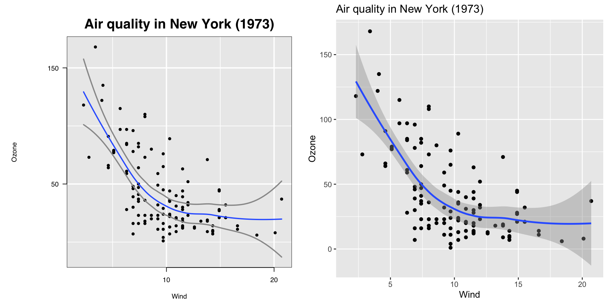
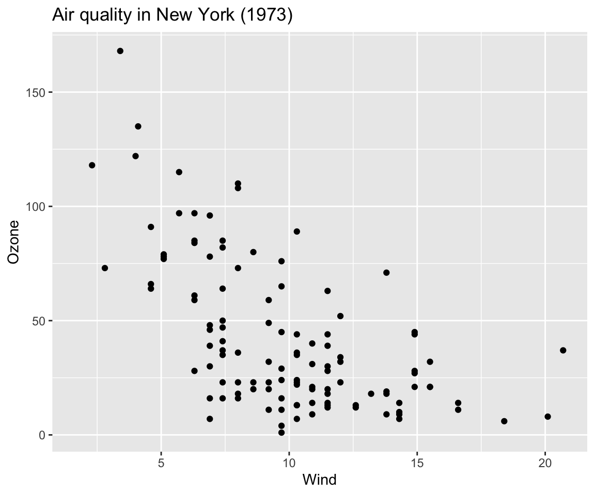
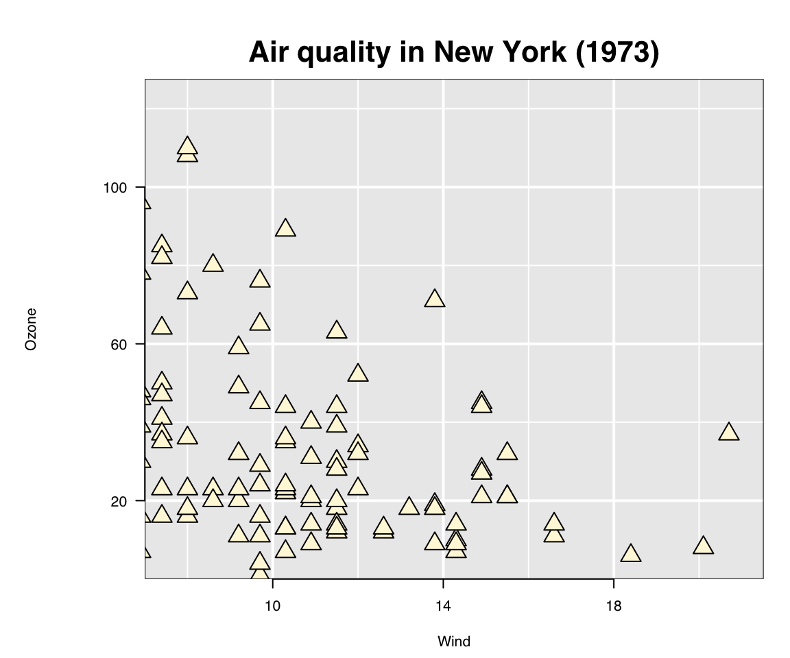
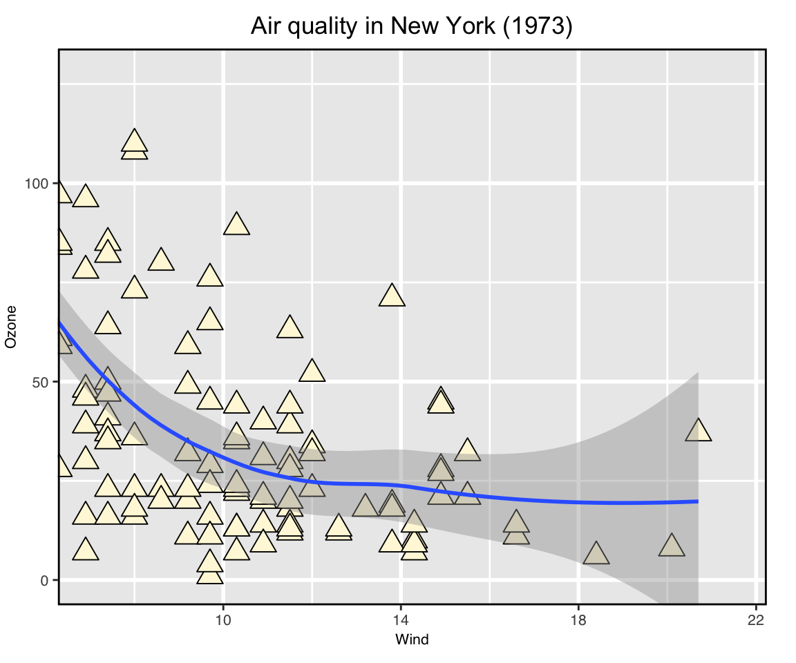
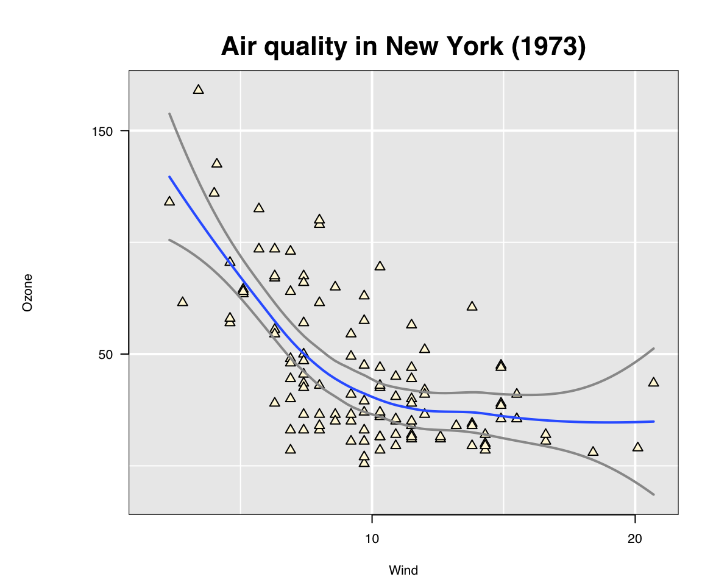
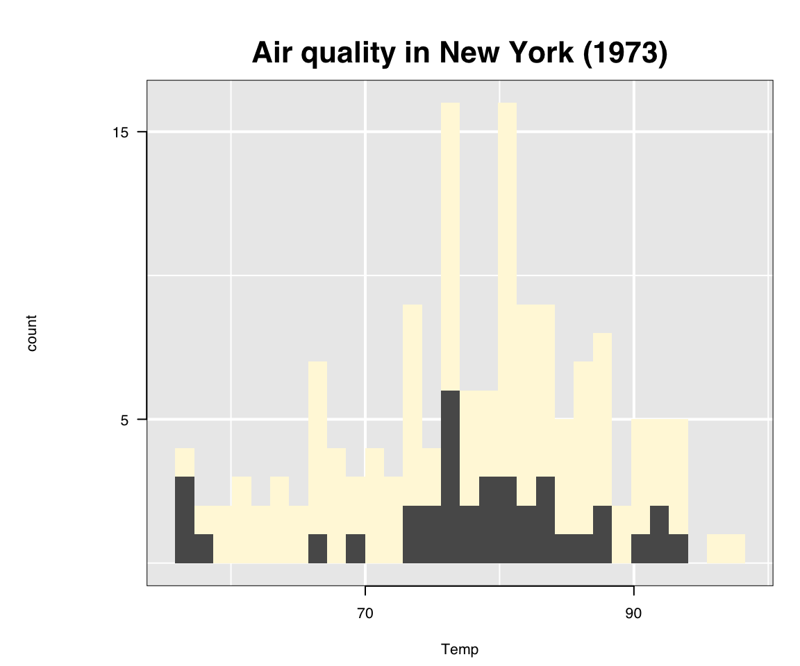

A grammar of interactive graphics
R. W. Oldford and Zehao Xu
2021-04-16
Source:vignettes/grammarOfInteractiveGraphics.Rmd
grammarOfInteractiveGraphics.RmdJust as ggplot2 provides a layered implementation of a grammar of graphics, loon.ggplot provides a layered implementation of a grammar of interactive graphics.
With loon.ggplot, data analysts can easily switch between the elegant and beautiful static graphics of ggplot2 and the powerful direct manipulation interactive graphics of loon, using each where it is most natural.
airquality as a working example
Consider the airquality dataset:
data("airquality") summary(airquality) #> Ozone Solar.R Wind Temp #> Min. : 1.00 Min. : 7.0 Min. : 1.700 Min. :56.00 #> 1st Qu.: 18.00 1st Qu.:115.8 1st Qu.: 7.400 1st Qu.:72.00 #> Median : 31.50 Median :205.0 Median : 9.700 Median :79.00 #> Mean : 42.13 Mean :185.9 Mean : 9.958 Mean :77.88 #> 3rd Qu.: 63.25 3rd Qu.:258.8 3rd Qu.:11.500 3rd Qu.:85.00 #> Max. :168.00 Max. :334.0 Max. :20.700 Max. :97.00 #> NA's :37 NA's :7 #> Month Day #> Min. :5.000 Min. : 1.0 #> 1st Qu.:6.000 1st Qu.: 8.0 #> Median :7.000 Median :16.0 #> Mean :6.993 Mean :15.8 #> 3rd Qu.:8.000 3rd Qu.:23.0 #> Max. :9.000 Max. :31.0 #>
It has missing data (in Ozone and Solar.R) and the variable Month can be tidied up and turned into a factor (to preserve calendar order) as
airquality$Month <- factor(month.abb[airquality$Month], levels = month.abb[unique(airquality$Month)])
With its mix of continuous and categorical variables (some with missing data) this transformed data will be used to illustrate loon.ggplot’s grammar of interactive graphics.
l_ggplot()
The interactive grammar begins by simply replacing ggplot() by l_ggplot(), wherever it appears in the layered grammar. The same arguments (e.g., data, mapping, etc.) and the same grammar are used, but now to create an interactive plot.
An interactive scatterplot of Ozone versus Wind is simply constructed:
l_ggplot(airquality, mapping = aes(x = Wind, y = Ozone)) + ggtitle("Air quality in New York (1973)") + geom_point() + geom_smooth()
The resulting loon plot appears in a new window together with the loon inspector in a separate window. Changes are made interactively to the plot via mouse interaction in these two windows.
In contrast, had ggplot() been used, a static plot would have been rendered on the “current device”.
The two are shown side by side below (the loon plot at left is a static version rendered via grid graphics so differs slightly from its display on screen, mainly in terms of font and point sizes):  Each plot presents the same information in slightly different form, with different choices on title placement, white space padding and so on.
The most important difference with respect to the data is that the error bounds for the smooth appear as curves in the loon plot and as a transparent grey region in the ggplot. The main reason for this default choice is that tcl (on which loon is based) does not (yet) support alpha transparency. Note, however, that a similar grey region exists as a hidden layer the loon plot; this can be revealed interactively via the loon inspector’s Layers tab.
The loon plot is designed for direct interaction effecting dynamic change; the ggplot is designed for elegant print layout.
Either can be constructed via the grammar.
loon-ggplot duality
With l_ggplot() the grammar takes advantages of the complementary strengths of the static ggplot and of the interactive loon plot.
Each operates in a separate domain:
- with
ggplot2, a plot is “changed” by adding to the+pipeline and rendering the result into a new plot - with
loon, a plot can be changed through direct mouse interaction or programmatically via the rich set of functions provided byloon
The two are combined in l_ggplot() allowing for either approach to be used at any time.
To see this, suppose we again construct a scatterplot using l_ggplot() but now without a smooth and assigning the result to a variable lgp:
lgp <- l_ggplot(airquality, mapping = aes(x = Wind, y = Ozone)) + ggtitle("Air quality in New York (1973)") + geom_point()
No plot of any kind will yet appear; lgp is a data structure of class:
class(lgp) #> [1] "lggplot" "gg" "ggplot"
It is simultaneously a ggplot and a loon plot (l_ggplot). As such it contains the information needed to construct either plot.
To render the static ggplot, the plot() function is called on lgp:
plot(lgp)

To render the interactive loon plot, the print() function is called on lgp. That is, simply evaluate lgp in the console:
lgp #> [1] ".l2.ggplot.plot" #> attr(,"class") #> [1] "l_plot" "loon"
This creates an interactive loon plot as before and shows the printed representation of that plot.
The loon plot in R is represented as a character vector with class attribute identifying it as a loon plot.
The string value here is of the ".lX.ggplot" where X is the numerical index uniquely identifying this l_ggplot in the order it was produced (indexing starting at 0). The value of X appearing above depends on the number of interactive plots l_ggplots the vignette produced to this point (n.b., some could be produced in the background).
Whatever value X takes, it will be incremented and printed anew every time the l_ggplot is “printed”. It will also appear in the title bar of the window displaying that plot, so as long as the plot is displayed the string “path” associated with the plot is accessible.
This string “path” is used to access the loon plot and assign it to a variable in R, say lp, as
lp <- l_getFromPath(".lX.ggplot") # <<<--- replace X by the appropriate number
Alternatively, it could have been assigned to an R variable lp using loon.ggplot()
lp <- loon.ggplot(lgp)
Just like printing lgp, this will create an interactive plot. (Note that had lgp been created with ggplot() instead of l_ggplot(), the above call would still work by converting the ggplot to a loon plot.)
Once captured on a variable, the loon plot lp can be queried/changed programmatically (as well as interactively). For example,
# Changing glyph aesthetics of ALL points lp["color"] <- "cornsilk" lp["glyph"] <- "ctriangle" # closed triangle lp["size"] <- 10 # Changing the scaling lp["zoomX"] <- 1.2 lp["zoomY"] <- 1.2 # Change the origin lp["panX"] <- 7 lp["panY"] <- 0 # All of the above could be done more simply through direct # interaction on the plot and/or with the inspector
Now, the interactive plot lp has changed state
plot(lp)
but the original lgp (produced by l_ggplot()) has not.
plot(lgp)

This is an important distinction. The structure lgp, like any ggplot, contains the information necessary to construct a plot.
- When it is printed, with
print()or in the console, the instructions produce an interactiveloonplot, and - when it is plotted, with
plot(), the instructions produce a staticggplot.
The interactive plot lp was rendered above using the grid graphics package. Just as loon.ggplot() can transform a static ggplot into an interactive loon plot, it can perform the inverse as well: transform an interactive loon plot into an elegant ggplot for printing:
gp <- loon.ggplot(lp) gp + geom_smooth()
 As can be seen, gp is a ggplot version meant to mirror the interactive plot lp from which it was formed.
In contrast, adding the smooth to the original l_ggplot would not reflect the changes made to the interactive plot lp:
plot(lgp + geom_smooth())
 Note also that
Note also that
lgp + geom_smooth()
would produce a new interactive loon plot with a smooth layer added.
Linking
lgp <- l_ggplot(airquality, mapping = aes(x = Wind, y = Ozone)) + ggtitle("Air quality in New York (1973)") + geom_point(fill = "cornsilk", pch = 24, cex = 2) + geom_smooth() + linking(linkingGroup = "Air Quality")
# Simply printing produces the interactive plot # (which could be later assigned to a variable with l_getFromPath() if need be) lgp # Or make the assignment now at creation with lp <- loon.ggplot(lgp) # And show a snapshot of the initial state plot(lp)

lp["linkingGroup"] #> [1] "Air Quality"
lgb <- l_ggplot(airquality, mapping = aes(x = Month)) + ggtitle("Air quality in New York (1973)") + geom_bar() + linking(linkingGroup = "Air Quality") lb <- loon.ggplot(lgb) # A snapshot of the initial state loon.ggplot(lb)

lgh <- l_ggplot(airquality, mapping = aes(x = Temp)) + ggtitle("Air quality in New York (1973)") + geom_histogram() + linking(linkingGroup = "Air Quality") lh <- loon.ggplot(lgh) # A snapshot of the initial state plot(lh)

head(lp["linkingKey"]) #> [1] "0" "1" "2" "3" "5" "6"
# And some fancy layer manipulation l_layer_raise(lp, "model") for (layerID in l_layer_ids(lp)){ if(l_layer_getLabel(lp, layerID) == "se polygon") { l_layer_show(lp, layerID)} }
# And some fancy layer manipulation l_layer_raise(lp, "model") for (layerID in l_layer_ids(lp)){ if(l_layer_getLabel(lp, layerID) == "se polygon") { l_layer_show(lp, layerID)} } # All of the above could be done more simply # through direct interaction on the plot and # on the inspector